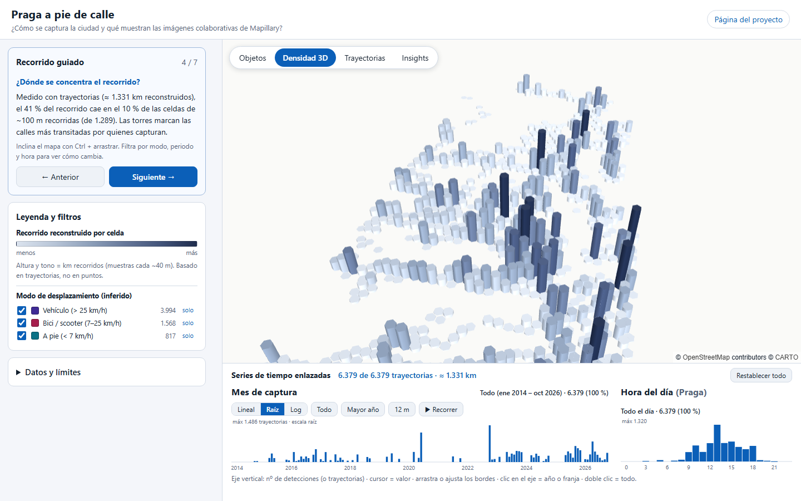

La aplicación

Cuatro vistas
ObjetosDensidad 3DTrayectoriasInsights
Panel izquierdo
Recorrido guiado y leyenda, que es el filtro.
Barra inferior
Series de tiempo enlazadas (mes → hora).
DS5343 Data Visualization · UTEC · 2026-2 · Presentación final
¿Qué muestran las imágenes colaborativas de Mapillary sobre quién captura la ciudad?
Jeffry Arturo Hilario Quintana
Aplicación: jeffhq.github.io/NewMapillaryVisualization
Usamos los datos colaborativos como si describieran la ciudad…
pero describen, sobre todo, a quien la captura.
ObjetosDensidad 3DTrayectoriasInsights
Recorrido guiado y leyenda, que es el filtro.
Series de tiempo enlazadas (mes → hora).
Un solo mes aporta el 26 % de las detecciones: con escala lineal el resto se ve plano.

71 % son señalización (34 %), alumbrado (25 %) y comercio (12 %).
El mobiliario urbano es el 6 %.
Color = categoría (Okabe-Ito). El resto, en gris.

≈ 1.331 km reconstruidos. Se mide con trayectorias, no con puntos: los puntos indican dónde hay datos, no dónde hay tráfico.

73 % en la tarde · 16 % mañana · 11 % noche.
Tres mapas con tramos de calle coloreados del amarillo (pocas trayectorias) al rojo (muchas). Misma escala en las tres franjas y cámara sincronizada.

Cada trayectoria aparece a su hora de inicio y se desvanece.
La serie por hora filtra la hora de inicio; el reloj recorre solo esa ventana.
Todas las fechas se superponen: es el ciclo diario, no un día concreto.
| Comentario del profesor | Cambio |
|---|---|
| Las trayectorias no se desvanecen | Solo estelas; sin líneas permanentes |
| El tráfico no se mide con puntos | Densidad con trayectorias (km por celda) |
| Filtro por año poco útil | Series de tiempo enlazadas con selección |
| Un color no puede significar dos cosas | Paletas separadas: categorías, modos, densidad |
| El histograma se ve muy plano | Escala raíz/log, tooltip, atajos y recorrido |
Mapillary describe mejor a quien captura que a la ciudad capturada. Antes de leer una ciudad en datos colaborativos, pregunta: ¿quién, cuándo y con qué?
Aplicación, paper, póster y código: jeffhq.github.io/NewMapillaryVisualization · github.com/jeffHQ/NewMapillaryVisualization
Datos © contribuyentes de Mapillary (CC BY-SA) · Mapa base © CARTO, © OpenStreetMap contributors · Código desarrollado con asistencia de IA, revisado por el autor